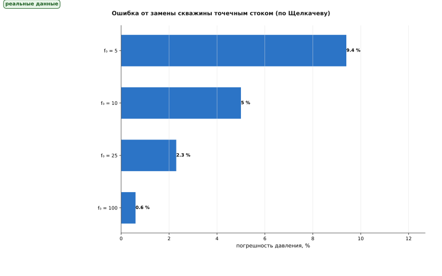

Основная формула строго верна для точечного стока в неограниченном пласте.
Ошибка от конечного радиуса скважины быстро падает с ростом f₀: 0,6% уже при f₀ = 100.
Для скважин обычных размеров это достигается примерно за 1 с, поэтому формула точна почти сразу.
Пороговая идея. Радиус влияет на пригодность модели через безразмерное время: точечный сток может хорошо работать и для реальной скважины. модель
Как это работает
Где формула строго верна
Строго говоря, основная формула (23.52) верна лишь для точечного стока — скважины нулевого радиуса, rс = 0. Второе условие — неограниченный пласт, Rк = ∞. стр. 492
«Строго говоря, основная формула теории упругого режима (23.52) справедлива лишь для случая точечного стока (при $r_c = 0$) в неограниченном пласте ($R_k = \infty$).»
«Строго говоря, основная формула теории упругого режима (23.52) справедлива лишь для случая точечного стока (при $r_c = 0$) в неограниченном пласте ($R_k = \infty$).»
Как оценили ошибку
В.Н.Щелкачев сравнил расчёты по формуле (23.52) с точной формулой Ван-Эвердингена и Херста. Та формула учитывает конечный радиус скважины rс. стр. 492
«Для оценки влияния конечности радиуса возмущающей скважины $r_c$ на результаты расчетов давления В.Н.Щелкачев сравнил результаты расчетов по формуле (23.52) и по точной формуле (Ван-Эвердинген и Херст), учитывающей конечный радиус скважины $r_c$.»
Числа Щелкачева
Погрешность давления по (23.52) составляет 0,6% при f₀ = 100. При f₀ = 25 она равна 2,3%. При f₀ = 10 — 5%, при f₀ = 5 — 9,4%. стр. 492
«В.Н.Щелкачев установил, что погрешность подсчетов давления по формуле (23.52) составляет 0,6% при $f_0 = 100$; 2,3% при $f_0 = 25$, 5% при $f_0 = 10$, 9,4%; при $f_0 = 5$»
«В.Н.Щелкачев установил, что погрешность подсчетов давления по формуле (23.52) составляет 0,6% при $f_0 = 100$; 2,3% при $f_0 = 25$, 5% при $f_0 = 10$, 9,4%; при $f_0 = 5$»
«В.Н.Щелкачев установил, что погрешность подсчетов давления по формуле (23.52) составляет 0,6% при $f_0 = 100$; 2,3% при $f_0 = 25$, 5% при $f_0 = 10$, 9,4%; при $f_0 = 5$»
«В.Н.Щелкачев установил, что погрешность подсчетов давления по формуле (23.52) составляет 0,6% при $f_0 = 100$; 2,3% при $f_0 = 25$, 5% при $f_0 = 10$, 9,4%; при $f_0 = 5$»

Числа автора: чем больше безразмерное время, тем меньше ошибка от конечного радиуса скважины.
Класс A · реальные данные · нарисовано кодом · стр. 492
Пример автора
Пусть κ = 1 м²/с, rс = 0,1 м. Время t = f₀·rс²/κ. При f₀ = 100 получаем t = 100·0,1²/1 = 1 с. стр. 492
«Допустим, что $\kappa = 1$ м$^2$/с, $r_c = 0,1$ м.»
Значит, уже через 1 с после пуска ошибка забойного давления по (23.52) не превышает 0,6%. Автор делает вывод: для скважин обычных размеров формула точна уже на самой ранней стадии. На поздней стадии — тем более. стр. 492
«Следовательно, уже через 1 с после пуска скважины расчеты забойного давления, выполненные по формуле (23.52), будут иметь погрешность, не превышающую 0,6%.»
«Отсюда следует, что для скважин обычных размеров формула (23.52) обеспечивает высокую степень точности уже на самой ранней (а тем более на поздней) стадии процесса перераспределения давления.»
«Отсюда следует, что для скважин обычных размеров формула (23.52) обеспечивает высокую степень точности уже на самой ранней (а тем более на поздней) стадии процесса перераспределения давления.»
Конечный пласт
Щелкачев также проверил расчётами работу скважины в конечном открытом пласте. В громадном большинстве практически интересных случаев изменение давления там можно изучать этим подходом. Подробности — в следующем шаге. стр. 492
«Непосредственными расчетами В.Н.Щелкачевым было установлено, что в громадном большинстве практически интересных случаев изменение давления при работе скважины в конечном открытом пласте»
Нюанс
Пример оценивает только эффект радиуса скважины. Он не проверяет влияние внешней границы на поздней стадии. Не смешивайте эти две причины ошибки. стр. 492
По шагам
Как оценить влияние радиуса скважины
Выразите время через параметр Фурье: t = f₀·rс²/κ. стр. 492
Подставьте нужный f₀, радиус скважины и пьезопроводность. стр. 492
Сопоставьте f₀ с оценками погрешности Щелкачева. стр. 492
Разбор примеров из книги по книге
Когда ошибка от конечного радиуса становится малой стр. 492
Условие. Пьезопроводность равна 1 м²/с, радиус скважины 0,1 м. Требуется определить, когда параметр Фурье на масштабе скважины достигает 100.
Выразить время как параметр Фурье, умноженный на квадрат радиуса скважины и делённый на пьезопроводность.
Подставить параметр Фурье 100, радиус 0,1 м и пьезопроводность 1 м²/с.
Сопоставить значение параметра 100 с оценкой Щелкачева.
Итог. В этих условиях через 1 с после пуска погрешность вычисления забойного давления по основной формуле не превышает 0,6%.
Решение на данных
Можно ли считать скважину точечным стоком
Признаки
Параметр Фурье по радиусу скважины f₀ = κt/rс²
Радиус скважины и пьезопроводность пласта
↓
Правило
Ошибка от конечного радиуса убывает с ростом f₀: 9,4% при 5, 5% при 10, 2,3% при 25, 0,6% при 100. стр. 492
↓
Вывод
При большом f₀ основная формула годится для реальной скважины; для обычных скважин это наступает уже через секунды.
Потренируйтесь
Дано: κ = 1 м²/с, rс = 0,1 м, прошло 1 с после пуска (f₀ = 100). (Разобранный пример, стр. 492)
Через 1 с f₀ = 100, а при f₀ = 100 погрешность 0,6%.
Дано: Параметр Фурье f₀ = 5. (модель)
По Щелкачеву при f₀ = 5 погрешность 9,4%.
Дано: Параметр Фурье f₀ = 25. (модель)
По Щелкачеву при f₀ = 25 погрешность 2,3%.
Цифры и условия
При f₀ = 100 погрешность 0,6%. стр. 492
При f₀ = 25 погрешность 2,3%. стр. 492
При f₀ = 10 погрешность 5%. стр. 492
При f₀ = 5 погрешность 9,4%. стр. 492
При κ = 1 м²/с и rс = 0,1 м значение f₀ = 100 достигается через 1 с. стр. 492
Подстановка автора: время достижения заданного параметра Фурье для скважины. стр. 492
Обозначения
Обозначение
Что это
Единицы
$t$
время после пуска
с
$f_0$
параметр Фурье по радиусу скважины
безразмерный
$r_c$
радиус скважины
м
$\kappa$
коэффициент пьезопроводности
м²/с
Что это значит для данных по книге
По параметру Фурье на масштабе скважины судят, велика ли ошибка от замены скважины точечным стоком.
Вход
Пьезопроводность, радиус скважины и время либо заданный параметр Фурье.
Выход
Оценка ошибки или время достижения заданного параметра Фурье.
Где ломается
Замену конечного радиуса точечным стоком нельзя считать точным решением.
Где здесь ручной труд специалиста
Входные данные
Пьезопроводность, радиус скважины и время либо заданный параметр Фурье.
Ручные шаги
Сверить радиус и пьезопроводность, вычислить параметр или восстановить время, сопоставить с оценкой из книги.
Точки суждения
Не считать секунду универсальным сроком применимости формулы.
Время
Сравнение с готовыми оценками быстрее повторного решения задачи конечного радиуса.
Типичные ошибки
Взять параметр по внешнему радиусу или повторить численный вывод для иной скважины без пересчёта.
Аналогия модель
Как тестировать упрощённую модель против опорной реализации на разных режимах входных данных.
Где аналогия перестаёт работать: Сравнение моделей не измеряет ошибку реального исследования скважины и не устраняет эффект внешней границы.
Глубже
Не смешивайте две причины ошибки модель
Малый эффект радиуса скважины не исключает влияния внешней границы на поздней стадии. Сравнение с формулой Ван-Эвердингена и Херста на этой странице оценивает именно эффект радиуса скважины.
Новые понятия
Точечный сток
Скважина, радиус которой в модели принят равным нулю. стр. 492
Параметр Фурье
Безразмерное время; здесь используется масштаб радиуса скважины. стр. 492модель
Забойное давление
Давление у нижней части скважины, где она сообщается с пластом. стр. 492модель
Пьезопроводность
Коэффициент перераспределения давления в пласте. стр. 492модель
Все утверждения шага с дословной цитатой автора и страницей книги (по PDF).
Строго основная формула выведена для скважины нулевого радиуса. наблюдение
«Строго говоря, основная формула теории упругого режима (23.52) справедлива лишь для случая точечного стока (при $r_c = 0$) в неограниченном пласте ($R_k = \infty$).»
Строго основная формула выведена для пласта без внешней границы. наблюдение
«Строго говоря, основная формула теории упругого режима (23.52) справедлива лишь для случая точечного стока (при $r_c = 0$) в неограниченном пласте ($R_k = \infty$).»
Щелкачев сравнил основную формулу с точной формулой Ван-Эвердингена и Херста для конечного радиуса скважины. наблюдение
«Для оценки влияния конечности радиуса возмущающей скважины $r_c$ на результаты расчетов давления В.Н.Щелкачев сравнил результаты расчетов по формуле (23.52) и по точной формуле (Ван-Эвердинген и Херст), учитывающей конечный радиус скважины $r_c$.»
По сравнению Щелкачева погрешность при параметре Фурье 100 составляет 0,6%. наблюдение
«В.Н.Щелкачев установил, что погрешность подсчетов давления по формуле (23.52) составляет 0,6% при $f_0 = 100$; 2,3% при $f_0 = 25$, 5% при $f_0 = 10$, 9,4%; при $f_0 = 5$»
По сравнению Щелкачева погрешность при параметре Фурье 25 составляет 2,3%. наблюдение
«В.Н.Щелкачев установил, что погрешность подсчетов давления по формуле (23.52) составляет 0,6% при $f_0 = 100$; 2,3% при $f_0 = 25$, 5% при $f_0 = 10$, 9,4%; при $f_0 = 5$»
По сравнению Щелкачева погрешность при параметре Фурье 10 составляет 5%. наблюдение
«В.Н.Щелкачев установил, что погрешность подсчетов давления по формуле (23.52) составляет 0,6% при $f_0 = 100$; 2,3% при $f_0 = 25$, 5% при $f_0 = 10$, 9,4%; при $f_0 = 5$»
По сравнению Щелкачева погрешность при параметре Фурье 5 составляет 9,4%. наблюдение
«В.Н.Щелкачев установил, что погрешность подсчетов давления по формуле (23.52) составляет 0,6% при $f_0 = 100$; 2,3% при $f_0 = 25$, 5% при $f_0 = 10$, 9,4%; при $f_0 = 5$»
Для примера автор задаёт пьезопроводность 1 м²/с и радиус скважины 0,1 м. наблюдение
«Допустим, что $\kappa = 1$ м$^2$/с, $r_c = 0,1$ м.»
В примере параметру Фурье 100 соответствует 1 с после пуска. вывод
В громадном большинстве практически интересных случаев Щелкачев расчётами проверил возможность изучать давление при работе скважины в конечном открытом пласте. вывод
«Непосредственными расчетами В.Н.Щелкачевым было установлено, что в громадном большинстве практически интересных случаев изменение давления при работе скважины в конечном открытом пласте»
Для условий примера через 1 с ошибка вычисления забойного давления не превышает 0,6%. вывод
«Следовательно, уже через 1 с после пуска скважины расчеты забойного давления, выполненные по формуле (23.52), будут иметь погрешность, не превышающую 0,6%.»
Для скважин обычных размеров автор считает основную формулу точной уже на ранней стадии перераспределения давления. вывод
«Отсюда следует, что для скважин обычных размеров формула (23.52) обеспечивает высокую степень точности уже на самой ранней (а тем более на поздней) стадии процесса перераспределения давления.»
На поздней стадии автор считает приближение для скважин обычных размеров тем более точным в отношении конечности радиуса скважины. вывод
«Отсюда следует, что для скважин обычных размеров формула (23.52) обеспечивает высокую степень точности уже на самой ранней (а тем более на поздней) стадии процесса перераспределения давления.»
Исходный текст урока
Стр. 492 · 5.2. Плоскорадиальный фильтрационный поток упругой жидкости. Основная формула теории упругого режима фильтрации
Строго говоря, основная формула теории упругого режима (23.52) справедлива лишь для случая точечного стока (при $r_c = 0$) в неограниченном пласте ($R_k = \infty$).
Стр. 492 · 5.2. Плоскорадиальный фильтрационный поток упругой жидкости. Основная формула теории упругого режима фильтрации
Для оценки влияния конечности радиуса возмущающей скважины $r_c$ на результаты расчетов давления В.Н.Щелкачев сравнил результаты расчетов по формуле (23.52) и по точной формуле (Ван-Эвердинген и Херст), учитывающей конечный радиус скважины $r_c$. В.Н.Щелкачев установил, что погрешность подсчетов давления по формуле (23.52) составляет 0,6% при $f_0 = 100$; 2,3% при $f_0 = 25$, 5% при $f_0 = 10$, 9,4%; при $f_0 = 5$ контура питания или радиус круговой непроницаемой границы пласта.
Стр. 492 · 5.2. Плоскорадиальный фильтрационный поток упругой жидкости. Основная формула теории упругого режима фильтрации
Оценим практическое значение этой погрешности. Допустим, что $\kappa = 1$ м$^2$/с, $r_c = 0,1$ м. Тогда, полагая $f_0 = 100$, найдем
Стр. 492 · 5.2. Плоскорадиальный фильтрационный поток упругой жидкости. Основная формула теории упругого режима фильтрации
$$t = f_0 \frac{r_c^2}{\kappa} = 100 \frac{0,1^2}{1} = 1$ с. Следовательно, уже через 1 с после пуска скважины расчеты забойного давления, выполненные по формуле (23.52), будут иметь погрешность, не превышающую 0,6%. Отсюда следует, что для скважин обычных размеров формула (23.52) обеспечивает высокую степень точности уже на самой ранней (а тем более на поздней) стадии процесса перераспределения давления. Непосредственными расчетами В.Н.Щелкачевым было установлено, что в громадном большинстве практически интересных случаев изменение давления при работе скважины в конечном открытом пласте можно в тече-